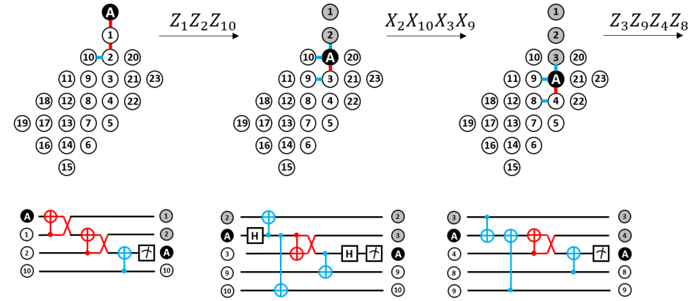

Quantum Computation – Quantum Error Correction
|  | We describe a class of neighboring-block stabilizer quantum error correction codes and demonstrate that such a class of codes can be
implemented in a resource-efficient manner using a single ancilla and circular near-neighbor qubit connectivity. We propose an implementation for
syndrome-measurement circuits for codes from the class and illustrate its workings for cases of three-qubit repetition code, Laflamme's five-qubit code,
and Shor's nine-qubit code. For three-qubit repetition code and Laflamme's five-qubit code, the suggested scheme has the property that it uses only native
two-qubit controlled-not-swap gates, which potentially reduces the amount of noncorrectable errors due to the shorter gate time. Elements of the scheme can be
used to implement surface code with near-neighbor connectivity using a single ancilla, as demonstrated in an example. We developed efficient decoding procedures
for repetition codes and the Laflamme's five-qubit code using a minimum-weight perfect-matching approach to account for the specific order of measurements in
our scheme. The analysis of noise levels for which the scheme could show improvements in the fidelity of a stored logical qubit in the three-qubit repetition
code and Laflamme's five-qubit code cases is provided. We complement our results by realizing the developed scheme for a three-qubit code using an
IBM quantum processor and the Laflamme's five-qubit code using the state-vector simulator. |
Quantum Computation – Quantum Algorithms
 |
Efficient realization of quantum algorithms is among main challenges on the way towards practical quantum computing.
Various libraries and frameworks for quantum software engineering have been developed. Here we present a software package containing implementations
of various quantum gates and well-known quantum algorithms using PennyLane library. Additoinally, we used a simplified technique for decomposition of
algorithms into a set of gates which are native for trapped-ion quantum processor and realized this technique using PennyLane library. The decomposition
is used to analyze resources required for an execution of Shor’s algorithm on the level of native operations of trapped-ion quantum computer.
Our original contribution is the derivation of coefficients needed for implementation of the decomposition. Templates within the package include all
required elements from the quantum part of Shor’s algorithm, specifically, efficient modular exponentiation and quantum Fourier transform that can be realized
for an arbitrary number of qubits specified by a user. All the qubit operations are decomposed into elementary gates realized in PennyLane library.
Templates from the developed package can be used as qubit-operations when defining a QNode. |
Statistical Learning – Nonparametric Logistic Regression
 |
Following Hastie Tibshirani “Elements of Statistical Learning”, two techniques are implemented
to make logistic regression model more flexible and robust at the same time: basis expansion using natural splines
and regularization penalizing curvature of the resulting function. Straightforward implementation of these techniques
leads to technical complication: computations are too slow due to numerical integration in the Newton-Raphson routine.
To overcome this issue, a way to perform closed-form integration instead of numerical integration is introduced for both
one-dimensional and multidimensional case. |
Statistical Learning – Application of Multivariate Kalman Filter: Estimation of Output Gap
 |
Output gap is the difference between actual GPD and potential GDP. Since we do not observe potential GDP,
estimation of the output gap is very useful for assessing the performance of the economy. Conventional methods to
estimate the output gap, such as Hodrick-Prescott filter, have some drawbacks: estimations are unstable to
additions of recent data from last known time-periods and many simple methods don't take into
account other indicators such as interest rate. Kalman Filter helps to avoid these problems. The specification of
multivariate Kalman Filter was built to assess non-linearly the output gap of the Russian economy taking into account
other economic indicators. |